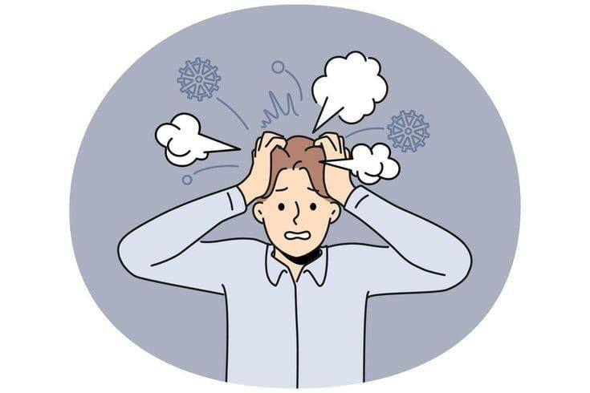
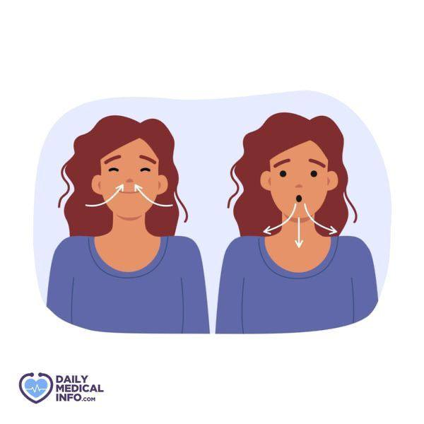

Совладание с беспокойством

Аутотренинг
Аутотренинг — это метод психологической саморегуляции, основанный на самовнушении и
расслаблении. Он помогает снизить уровень тревоги, восстановить эмоциональное равновесие
и улучшить общее самочувствие. Регулярное применение аутотренинга способствует развитию
способности к самоконтролю и управлению своими эмоциями.
- Аутогенное погружение — расслабление тела и сознания через концентрацию
на ощущениях тяжести и тепла в различных частях тела.
- Внушение и визуализация — использование позитивных утверждений и
мысленных образов для достижения желаемого состояния спокойствия и уверенности.
- Энергичный выход в бодрствование — постепенное возвращение к активному
состоянию через активацию мышц и глубокое дыхание.
Психологические приёмы снижения стресса
Техника «5-4-3-2-1»
Эта техника помогает быстро вернуться в настоящий момент и снизить уровень тревоги.
Необходимо назвать: 5 вещей, которые вы видите; 4 вещи, которые вы можете потрогать;
3 вещи, которые вы слышите; 2 вещи, которые вы чувствуете на запах; 1 вещь, которую
вы можете попробовать на вкус. Этот метод переключает внимание с тревожных мыслей
на окружающую реальность.
Диафрагмальное дыхание

Диафрагмальное (глубокое) дыхание активирует парасимпатическую нервную систему,
которая отвечает за расслабление. Техника выполнения: медленный вдох через нос
на 4 счёта, задержка дыхания на 4 счёта, медленный выдох через рот на 6 счётов.
Повторение этого цикла в течение 5–10 минут значительно снижает уровень стресса
и нормализует сердечный ритм.
Совладание с игнорированием и отвлечением от проблемы
Метод «Хотя бы N минут»
Этот метод помогает преодолеть прокрастинацию и начать работу над сложной задачей.
Суть заключается в том, чтобы пообещать себе работать над задачей всего несколько минут
(например, 5 или 10). Часто после начала работы появляется мотивация продолжить,
и задача выполняется быстрее, чем ожидалось. Этот подход снижает психологическое
сопротивление и делает задачу менее пугающей.
Дедлайны
Установление конкретных сроков выполнения задач помогает структурировать время и
снижает стресс от неопределённости. Дедлайны создают чёткие границы и мотивируют
к действию. Важно устанавливать реалистичные сроки и разбивать большие задачи на
более мелкие с промежуточными дедлайнами. Это позволяет контролировать процесс
и избегать накопления стресса в последний момент.
Метод «Поедание лягушки»
Этот метод основан на принципе выполнения самой сложной или неприятной задачи в начале дня,
когда уровень энергии и мотивации максимален. «Лягушка» — это задача, которую больше всего
хочется отложить. Выполнив её первой, вы получаете чувство облегчения и мотивацию для
продолжения работы над остальными задачами. Это снижает общий уровень стресса и повышает
продуктивность в течение дня.
Совладание с самообвинением
Управление ожиданиями
Завышенные ожидания от себя часто приводят к самообвинению и разочарованию. Важно
устанавливать реалистичные цели и понимать, что идеальных результатов достичь невозможно.
Признание своих ограничений и учёт внешних обстоятельств помогает снизить уровень
самокритики. Разрешение себе делать ошибки и учиться на них — важная часть здорового
отношения к себе.
Признание своих достижений
Регулярное фиксирование и признание своих успехов, даже небольших, помогает бороться
с самообвинением. Ведение дневника достижений или просто мысленное напоминание себе
о проделанной работе создаёт более сбалансированную картину своих способностей.
Важно отмечать не только крупные победы, но и маленькие шаги вперёд, которые
часто остаются незамеченными.
Поддерживающее окружение
Окружение себя людьми, которые поддерживают и понимают, играет важную роль в борьбе
с самообвинением. Общение с теми, кто может объективно оценить ситуацию и предложить
конструктивную обратную связь, помогает снизить уровень самокритики. Важно также
научиться просить помощи и поддержки, когда это необходимо, вместо того чтобы
справляться со всем в одиночку.